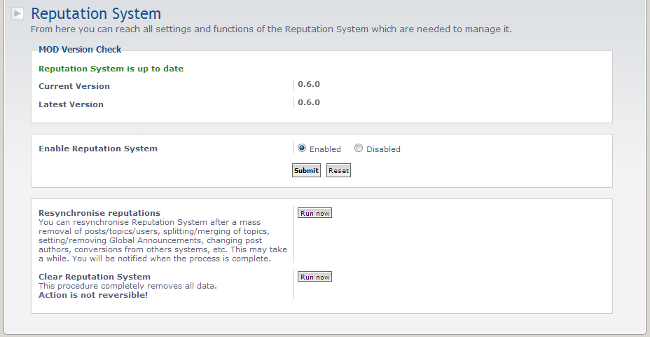
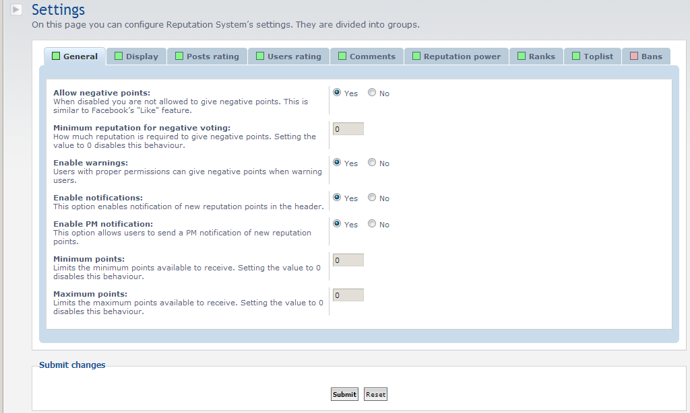
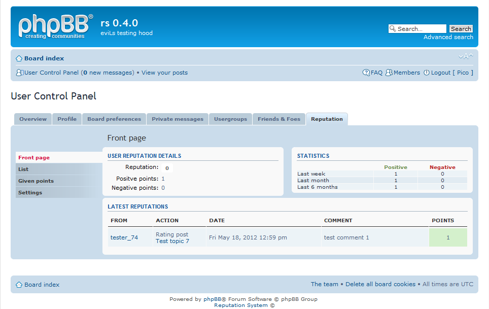
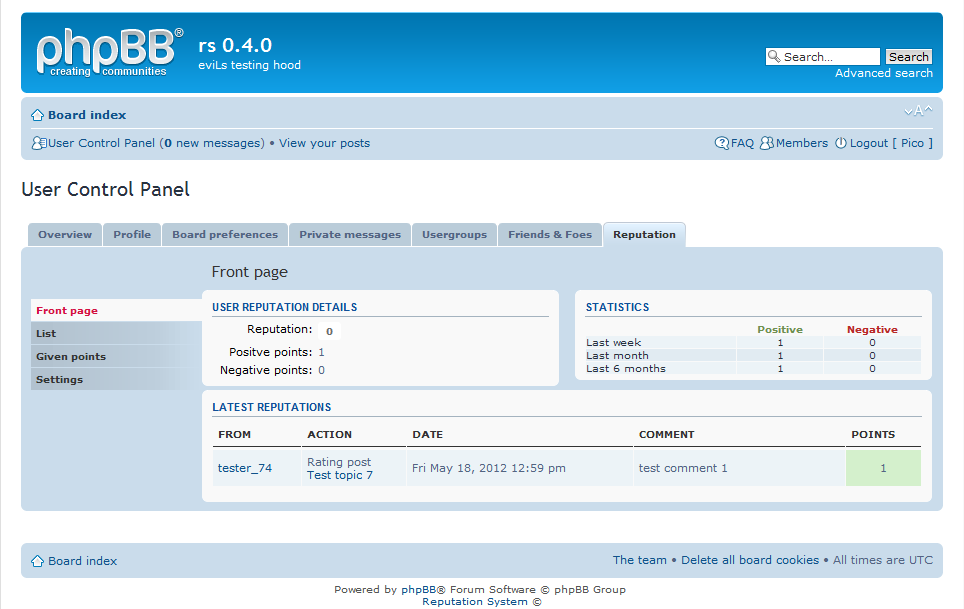

Reputation System
This is a MOD for phpBB3 that will adds reputation (karma) to your board. It allows users to rate posts or other users, view rating statistics in user reputation details, set up own reputation ranks. Users can write a short comment with giving reputation.
Features
- AJAX post rating
- AJAX user rating
- posibility to choose reputation power during giving a reputation point
- simple comments
- giving negative reputation points during warning users
- resynchronise and truncate function
- lots of ACP setting such as: enable/disable the whole system, enable/disable negative points, enable/disbale comment, force to write a reputation comment, reputation power settings (base on post, groups, etc.)
- permissions system (forum and user) - you can adjust it to your board
- built-in converter from other similar system (Karma MOD, Thanks for posts, Helpmod)
- and more
Screenshots
 {kind=link}
{kind=link}
 

{kind=link}
Requirements
- phpBB >3.0.11
- PHP >5.2
- Javascript
License
GNU General Public License v2